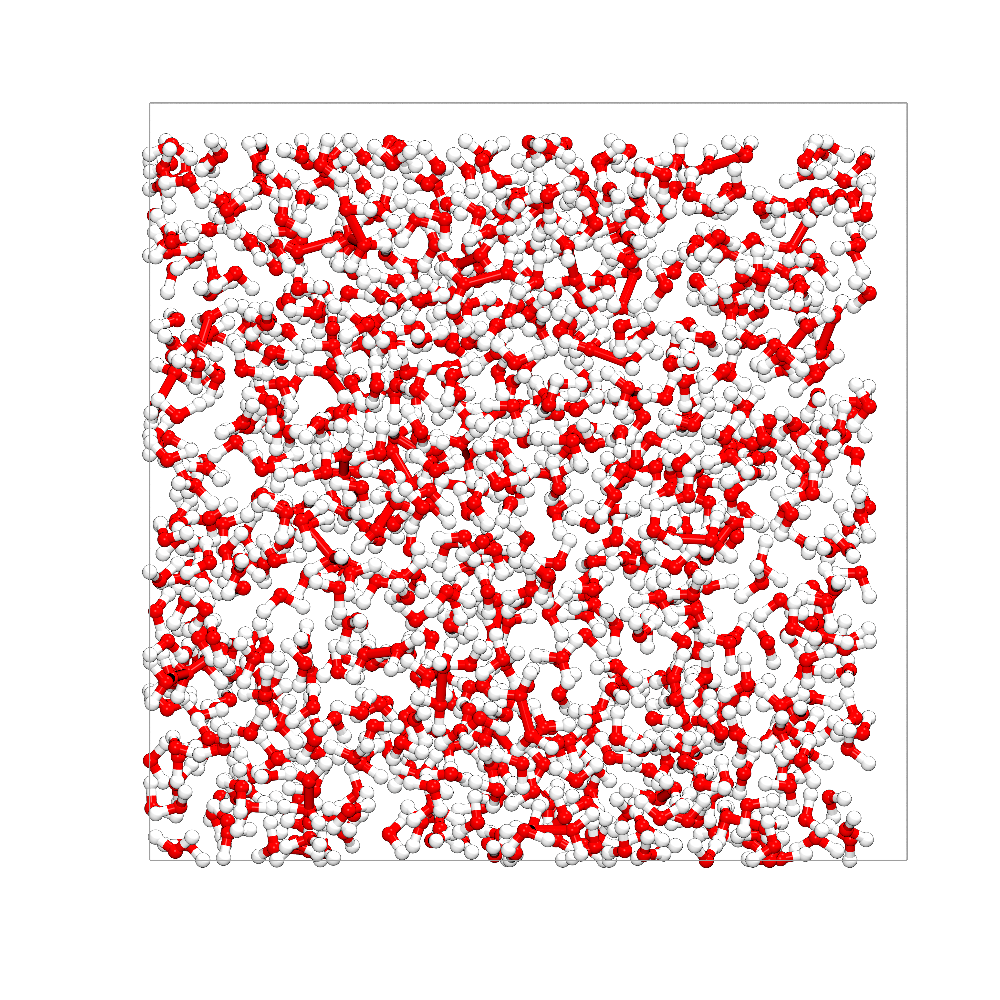

Getting Started#
The cemd package revolves around the AtomicSystem class,
which serves as the primary container for all atomic data: coordinates, topology, box
parameters, masses, and force field parameters.
Loading a System#
The easiest way to load a system is directly from a LAMMPS .data file:
from cemd import AtomicSystem
system = AtomicSystem.from_file("waterbox.data")
print(system)
<AtomicSystem with 2709 atoms, 1806 bonds>
Box
a (Å) b (Å) c (Å) α (°) β (°) γ (°)
30 30 30 90 90 90
Atoms
type number % mass charge
H 1806 66.67 1.007947 0.0
O 903 33.33 15.999430 0.0
Bonds
type number
H-O 1806
Total charge: 0.000e
Volume: 27.00 nm3
Density: 1.00 g/cm3
Other supported formats include .cif and .pdb:
# From CIF (crystallographic information file)
system = AtomicSystem.from_file("structure.cif")
# From PDB (Protein Data Bank format)
system = AtomicSystem.from_file("molecule.pdb")
# From SDF (structure-data file)
system = AtomicSystem.from_file("ligand.sdf")
Creating a System from SMILES#
You can also create molecules directly from their SMILES string:
# Create a simple molecule
ethanol = AtomicSystem.from_smiles("CCO")
print(ethanol)
# Create a more complex molecule
caffeine = AtomicSystem.from_smiles("CN1C=NC2=C1C(=O)N(C(=O)N2C)C")
# Visualize the molecule
caffeine.view()
Interactive Database Exploration#
CEMD provides interactive interfaces to explore and load structures from open databases.
Crystallography Open Database (COD)#
from cemd.db import explore_cod
# Launches an interactive TUI to browse COD
system = explore_cod()
? Search by: (Use arrow keys)
» Mineral Name
Chemical Formula
COD ID
? Search by: Mineral Name
? Enter your query: calcite
Found 145 structures
↑↓ Move [Enter] Load [d] DOI [w] COD page [q] Quit
ID | NAME | FORMULA | LATTICE PARAMETERS | DOI
----------------------------------------------------------------------------------------------------
1001741 | Nitrocalcite | - Ca H8 N2 O10 - | 6.3 9.2 14.9 | 90° 106° 90° | ✓
1001743 | Nitrocalcite | - Ca H8 N2 O10 - | 6.3 9.1 14.8 | 90° 106° 90° | -
1010917 | Barytocalcite | - C2 Ba Ca O6 - | 8.2 5.2 6.6 | 90° 106° 90° | -
➜ 1010928 | Calcite | - C Ca O3 - | 6.4 6.4 6.4 | 46° 46° 46° | ✓
1010962 | Calcite | - C Ca O3 - | 6.4 6.4 6.4 | 46° 46° 46° | -
1011029 | Nitratine | - N Na O3 - | 6.3 6.3 6.3 | 47° 47° 47° | ✓
1011228 | Rhodochrosite | - C Mn O3 - | 5.8 5.8 5.8 | 48° 48° 48° | ✓
PubChem Database#
from cemd.db import explore_pubchem
# Interactive PubChem explorer
molecule = explore_pubchem()
Inspecting a System#
Once loaded, the AtomicSystem object provides immediate access to physical
properties and topology:
# Basic properties
print(f"Box parameters [a, b, c, α, β, γ] : {system.box}")
print(f"Number of atoms : {system.num_atoms}")
print(f"Atom types : {system.atom_types}")
print(f"Density : {system.density:.3f} g/cm³")
print(f"Total charge : {system.total_charge:.4f} e")
print(f"Volume : {system.volume:.2f} ų")
Box parameters [a, b, c, α, β, γ] : [30 30 30 90 90 90]
Number of atoms : 2709
Atom types : ['H', 'O']
Density : 1.000 g/cm³
Total charge : 0.0000 e
Volume : 27000.00 ų
# Direct access to the atoms DataFrame
print(system.atoms.head(10))
type charge x y z
id
1 O 0.0 14.507000 26.157000 14.212
2 H 0.0 13.987000 25.868000 13.408
3 H 0.0 15.459000 26.318001 13.954
4 O 0.0 16.625999 16.400000 13.285
5 H 0.0 15.970000 15.702000 12.997
6 H 0.0 17.561001 16.048000 13.139
7 O 0.0 25.382999 11.912000 19.295
8 H 0.0 24.693001 11.469000 18.738
9 H 0.0 26.286999 12.003000 18.814
10 O 0.0 17.439001 3.114000 14.050
[10 rows x 5 columns]
Counting Specific Atom Types#
# Count specific atom types
n_si = system.get_count("Si")
n_ca = system.get_count("Ca")
n_h2o = system.get_count("O") // 2 # Rough estimation for water
print(f"Si atoms: {n_si}, Ca atoms: {n_ca}, H2O molecules: {n_h2o}")
Manipulating Systems#
Adding Atoms#
# Add a single atom
system.add_atom("Na", [5.0, 5.0, 5.0], charge=1.0)
# Add multiple atoms at once
system.add_atoms(
atypes=["Na", "Cl", "Na"],
positions=[[0, 0, 0], [10, 0, 0], [20, 0, 0]],
charges=[1.0, -1.0, 1.0]
)
Removing Atoms#
# Remove specific atoms by index
system.remove_atoms([1, 2, 3])
# Remove a single atom
system.remove_atom(5)
Setting Box Parameters#
# Set a cubic box
system.set_box([30, 30, 30, 90, 90, 90])
# Set an orthorhombic box
system.set_box([20, 30, 25, 90, 90, 90])
Replicating the System#
# Replicate the system 2x in x, 3x in y, 1x in z
system.replicate([2, 3, 1])
Wrapping Atoms (PBC)#
# Bring all atoms back into the box
system.wrap()
# Center the system on its center of mass
system.center_on_com()
# Center only specific atom types
system.center_on_com(atom_types=["Ca", "Si"])
Protonating Atoms#
# Protonate specific atoms
system.protonate_atoms([10, 15, 20], bond_length=1.0)
# Protonate a single atom
system.protonate_atom(10, bond_length=1.0)
Saving a System#
To write a system back to a LAMMPS .data file:
# Save with the default atom style (preserved from the input file)
system.write("output.data")
# Specify the atom style explicitly
system.write("output.data", atom_style="full") # full: id mol type charge x y z
system.write("output.data", atom_style="charge") # charge: id type charge x y z
Note
The .data format is the recommended output format for LAMMPS simulations.
The system can also be exported to the .pdb.
Converting a System#
To MDAnalysis#
Convert to a MDAnalysis Universe for advanced trajectory analysis:
u = system.to_mda()
print(u)
<Universe with 2709 atoms>
# Access trajectory frames
for ts in u.trajectory:
print(ts.frame, ts.positions.shape)
To Pymatgen#
Convert to a Pymatgen Structure for crystallographic analysis:
struct = system.to_pmg()
print(struct)
Full Formula (H1806 O903)
Reduced Formula: H2O
abc : 30.000000 30.000000 30.000000
angles: 90.000000 90.000000 90.000000
pbc : True True True
Sites (2709)
# SP a b c charge
---- ---- --------- --------- --------- --------
0 O 0.483567 0.8719 0.473733 0
1 H 0.466233 0.862267 0.446933 0
2 H 0.5153 0.877267 0.465133 0
...
Visualization#
You can visualize your system in VMD directly from Python:
# Static view of the current configuration
system.view()
# Customize the visualization
system.view(material="AOEdgy", resolution=12)
# View with an associated MD trajectory
system.view(trajectory="md_production.dcd")
{kind=link}

Setting Force Fields#
From Database#
Load force field parameters from the built-in database:
# Map atom types to force field parameters
assignments = {
'O': 'ospc', # Water oxygen (SPC model)
'H': 'hspc', # Water hydrogen (SPC model)
'Si': 'st', # Tetrahedral silicon (ClayFF)
'Ca': 'ca' # Aqueous calcium (ClayFF)
}
# Apply the force field
system.set_ff_from_database(assignments)
# Interactive force field explorer
system.explore_ff_database()
Manual Assignment#
# Set masses
system.set_masses({'H': 1.008, 'O': 15.999, 'Si': 28.085})
# Set charges
system.set_charges({'H': 0.41, 'O': -0.82, 'Si': 2.1})
# Set Lennard-Jones parameters
system.set_ff_pair_param('Si', [0.000184, 3.302]) # [epsilon, sigma]
# Apply mixing rules for cross-interactions
system.apply_pair_mixing_rules(rule='arithmetic')
Setting Topology#
Automatic Detection (ClayFF/CSHFF)#
# Apply ClayFF topology rules
system.set_topology('clayff')
# Apply CSHFF topology rules (ClayFF + specific calcium handling)
system.set_topology('cshff')
Custom Rules#
# Define a custom rule
custom_rule = {
"center_sel": "type O",
"new_type": "Ow",
"neighbors": [
{"sel": "type H", "cutoff": 1.2, "n": 2, "exact": True, "new_type": "Hw"}
],
"create_bond": True,
"create_angle": True
}
# Apply the rule
system.set_topology(custom_rule)
Manual Connectivity#
# Add a bond between atoms 1 and 2
system.add_bond([1, 2], "H-O")
# Add an angle (atoms 1-2-3)
system.add_angle([1, 2, 3], "H-O-H")
# Add a dihedral (atoms 1-2-3-4)
system.add_dihedral([1, 2, 3, 4], "C-C-C-C")
# Remove all connections
system.remove_all_connections()
# Keep only specific connection types
system.keep_connection_types(
bond_types=["H-O", "Si-O"],
angle_types=["H-O-H"]
)
Combining Systems#
from cemd.build import merge
# Merge two systems with a new box
merged = merge(system1, system2, box=[50, 30, 30, 90, 90, 90])
# Split a system
from cemd.build import split
system = split(system, axis=2, gap_size=20.0)